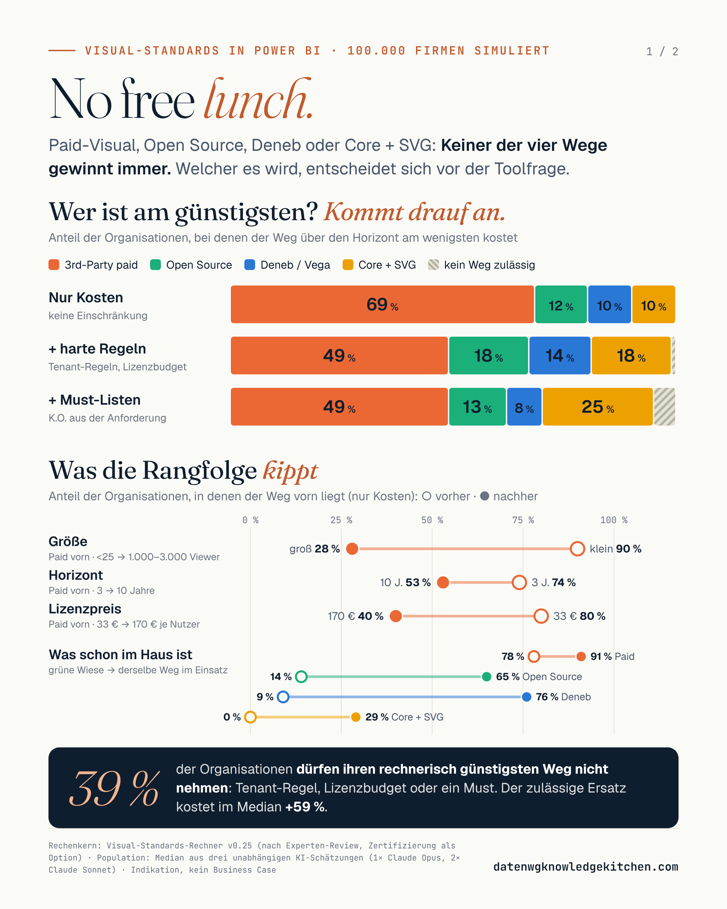
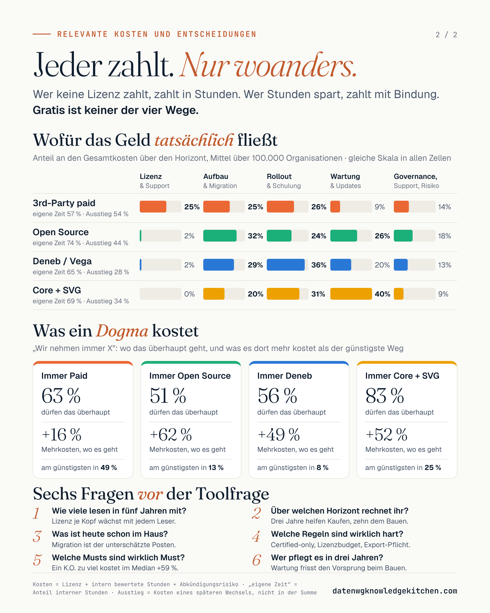

Paid-Visual, Open Source, Deneb oder Core Visuals mit SVG: Welcher Weg zum visuellen Standard in Power BI ist der günstigste? Wir haben die Frage nicht einer Firma gestellt, sondern 100.000. Die Antwort: Jeder Weg gewinnt irgendwo, keiner überall, und jeder kostet etwas, nur an einer anderen Stelle.

Der Visual-Standards-Rechner beantwortet für eine Organisation, was ein visueller Standard für Controlling und Finance über drei, fünf oder zehn Jahre kostet: mit einem gekauften Visual (Paid), einem fertigen Open-Source-Visual, Deneb-Vorlagen oder Core Visuals mit SVG-Measures. Die naheliegende Frage danach lautet: Und welcher Weg ist denn nun der richtige?
Die ehrliche Antwort ist „kommt drauf an". Das klingt nach Ausweichen, also haben wir es durchgerechnet. Nicht für einen Fall, sondern für eine ganze Population von Organisationen, mit demselben Rechenkern, den der Rechner im Browser benutzt.
Wie sehen Organisationen im DACH-Raum aus, die Power BI nutzen und einen visuellen Standard einführen wollen? Größe, Betriebsmodell, Horizont, was heute schon im Haus ist, welche Tenant-Regeln gelten, welche Anforderungen als Must auf der Liste stehen. Drei Agents haben das unabhängig voneinander geschätzt, einer mit Claude Opus, zwei mit Claude Sonnet, jeder mit einer anderen Perspektive (neutral, BI-Leitung, skeptischer Controller). Keiner kannte die Kostenlogik des Rechners. Übernommen wurde der Median.
Aus dieser Population entstehen 100.000 Profile. Jede Organisation läuft durch den Rechenkern v0.25: einmal mit den Erwartungswerten aller Annahmen (das ist die Empfehlung, die der Rechner geben würde) und einmal mit einer gepaarten Zufallsziehung (das ist eine Welt, wie sie tatsächlich hätte kommen können).
Erst nur die Kosten. Dann mit den harten Rahmenbedingungen (nur zertifizierte Visuals, kein Lizenzbudget, Custom Visuals gesperrt, IBCS-Zertifikat Pflicht). Dann zusätzlich mit den Must-Kriterien aus der Anforderungsliste, die einen Weg per K.O. ausschließen. Und schließlich so, wie es in der Praxis läuft: Bleibt kein Weg übrig, wird die Must-Liste verhandelt.
| Segment | Anteil | Ersteller | Viewer | nur zertifiziert | kein Lizenzbudget | heute nichts |
|---|---|---|---|---|---|---|
| Klein (< 250 MA) | 44 % | 2 | 20 | 10 % | 30 % | 48 % |
| Mittelstand | 29 % | 4 | 120 | 20 % | 20 % | 37 % |
| Gehobener Mittelstand | 7 % | 15 | 800 | 35 % | 12 % | 25 % |
| Konzern | 3 % | 60 | 5.000 | 50 % | 5 % | 14 % |
| Bank, Versicherung, Klinik | 8 % | 10 | 800 | 65 % | 15 % | 27 % |
| Öffentliche Hand | 8 % | 4 | 200 | 55 % | 40 % | 43 % |
Ersteller und Viewer: wahrscheinlichster Wert der Dreipunkt-Schätzung. Gewichtet ist nach Anzahl Organisationen, nicht nach Nutzern. Deshalb dominieren kleine und mittlere Organisationen. Die vollständige Population steht in population.json.
Anteil der Organisationen, bei denen der jeweilige Weg über den Horizont am wenigsten kostet:
| Linse | Paid | Open Source | Deneb | Core + SVG | kein Weg |
|---|---|---|---|---|---|
| Nur Kosten | 69 % | 12 % | 10 % | 10 % | 0 % |
| + harte Regeln (Tenant-Regeln, Lizenzbudget, gesperrte Custom Visuals) | 49 % | 18 % | 14 % | 18 % | 1 % |
| + Must-Listen aus der Anforderung | 49 % | 13 % | 8 % | 25 % | 5 % |
| + Must-Listen, verhandelbar wenn nichts übrig bleibt | 50 % | 14 % | 9 % | 27 % | 1 % |
Auf reine Kosten gerechnet liegt Paid in gut zwei Dritteln der Fälle vorn. Das liegt an der Population: Die meisten Organisationen sind klein, und bei 20 Lesern ist eine Lizenz billiger als jede Stunde, die man in Deneb-Vorlagen oder SVG-Measures steckt. Mit Rahmenbedingungen und Musts bleibt Paid vorn (49 %), Core + SVG ist Zweiter (25 %): Core übersteht fast jede Regel, weil es nichts zu installieren gibt. Open Source kommt auf 13 %. Ohne Zertifikat kann ein Open-Source-Visual im Service weder PDF/PPT exportieren noch abonniert werden. Seit Rechner v0.25 darf es zertifiziert werden, und das kostet: beim fertigen Visual einen Beitrag an den Maintainer, beim Eigenbau Stunden für Erst- und Rezertifizierung. 29 % der Organisationen rechnen Open Source zertifiziert, 65 % der Open-Source-Gewinner brauchen das Zertifikat. Ohne diese Option käme Open Source auf 5 % (Deneb 13 % statt 8 %, Paid 50 % statt 49 %). Die Zertifizierung ist für Open Source der entscheidende Hebel, und sie geht vor allem zulasten von Deneb, dem anderen günstigen Weg mit Zertifikat.
Das Bild hängt nicht an einem der drei Schätzer. Rechnet man jede Population einzeln, verschieben sich die Anteile (Paid 47 %–52 %, Core 18 %–28 %), die Aussage bleibt:
| Population (mit Must-Listen) | Paid | Open Source | Deneb | Core + SVG | kein Weg |
|---|---|---|---|---|---|
| Schätzer A · Opus | 52 % | 19 % | 7 % | 18 % | 3 % |
| Schätzer B · Sonnet | 49 % | 10 % | 9 % | 27 % | 4 % |
| Schätzer C · Sonnet | 47 % | 11 % | 9 % | 28 % | 5 % |
Fünf Größen entscheiden, welcher Weg vorn liegt. Keine davon ist eine Eigenschaft des Tools.
| Viewer | Organisationen | Paid | Open Source | Deneb | Core + SVG |
|---|---|---|---|---|---|
| unter 25 | 30.180 | 90 % | 4 % | 3 % | 3 % |
| 25–99 | 26.691 | 80 % | 8 % | 6 % | 6 % |
| 100–299 | 22.641 | 57 % | 17 % | 14 % | 12 % |
| 300–999 | 11.698 | 35 % | 22 % | 22 % | 21 % |
| 1.000–2.999 | 6.184 | 28 % | 24 % | 25 % | 22 % |
| ab 3.000 | 2.606 | 44 % | 15 % | 20 % | 21 % |
Anteil, bei dem der Weg auf reine Kosten am günstigsten ist, je Größenklasse.
| Weg | K.O. gesamt | davon harte Regeln | häufigste Gründe (Anteil aller Organisationen) |
|---|---|---|---|
| 3rd-Party paid | 37 % | 31 % | kein Lizenzbudget (25 %), Must „Copilot erstellt Reports“ (9 %), Custom Visuals gesperrt (9 %) |
| Open Source | 49 % | 17 % | Must „Support mit SLA“ (22 %), Must „PDF/PPT-Export & Abos“ (16 %), Must „Copilot erstellt Reports“ (9 %) |
| Deneb / Vega | 44 % | 13 % | Must „Support mit SLA“ (22 %), Must „Writeback im Visual“ (13 %), Must „Copilot erstellt Reports“ (9 %) |
| Core + SVG | 17 % | 5 % | Must „Writeback im Visual“ (13 %), IBCS-Zertifikat Pflicht (5 %), Must „IBCS-zertifiziert“ (5 %) |

Kein Weg ist gratis. Die Kosten verschieben sich zwischen den Blöcken, und die Niveaus unterscheiden sich:
| Weg | Lizenz & Support | Aufbau & Migration | Rollout & Schulung | Wartung & Updates | Governance, Support, Risiko | eigene Zeit | FTE intern | € je Viewer und Jahr | Ausstieg |
|---|---|---|---|---|---|---|---|---|---|
| 3rd-Party paid | 25 % | 25 % | 26 % | 9 % | 14 % | 57 % | 0,10 | 293 € | 54 % |
| Open Source | 2 % | 32 % | 23 % | 26 % | 18 % | 74 % | 0,21 | 486 € | 44 % |
| Deneb / Vega | 2 % | 29 % | 36 % | 20 % | 13 % | 65 % | 0,16 | 443 € | 28 % |
| Core + SVG | 0 % | 20 % | 31 % | 40 % | 9 % | 69 % | 0,22 | 567 € | 34 % |
Anteile: Mittel über alle Organisationen. „Eigene Zeit" = intern bewertete Stunden. FTE und € je Viewer: Median über alle Organisationen (Erwartungswert). „Ausstieg" = was ein Wechsel nach dem Horizont kosten würde, im Verhältnis zur Summe (Median); nicht in der Summe enthalten.
„Wir nehmen immer X" ist eine bequeme Regel. So sieht sie aus, über alle Organisationen gerechnet (mit allen Rahmenbedingungen und Musts):
| Regel | überhaupt zulässig | am günstigsten | Mehrkosten, wo zulässig |
|---|---|---|---|
| Immer 3rd-Party paid | 63 % | 49 % | +16 % |
| Immer Open Source | 51 % | 13 % | +62 % |
| Immer Deneb / Vega | 56 % | 8 % | +49 % |
| Immer Core + SVG | 83 % | 25 % | +52 % |
Paid ist dort, wo es erlaubt ist, das billigste Dogma (+16 %), und es ist in 63 % der Organisationen erlaubt. Core ist fast überall zulässig (83 %) und kostet dafür rund +52 % mehr als nötig. Open Source als Dogma scheitert schon an der Zulässigkeit (51 %) und ist dort, wo es geht, am teuersten, weil es auch die Fälle einschließt, in denen das Visual erst gebaut werden muss.
Bei der einzelnen Organisation ist die Rangfolge meist klar: Im Median liegt der zweitbeste zulässige Weg 37 % über dem besten, nur bei 13 % sind es weniger als 10 %. Aber die Zukunft streut. Unter den Organisationen, die zwischen mindestens zwei zulässigen Wegen wählen können, wäre in 28 % der simulierten Welten im Nachhinein ein anderer Weg billiger gewesen als der empfohlene, im Median um 25 %. Das ist kein Fehler der Rechnung, das ist der Preis der Unsicherheit. Deshalb zeigt der Rechner Bandbreiten statt Punktwerte.
Die Population ist keine Erhebung. Sie stammt aus drei unabhängigen Schätzungen durch Sprachmodelle (Claude Opus und zweimal Claude Sonnet), Median übernommen. Nur einer der Schätzer hat Quellen gesucht (Destatis-Größenklassen, BARC, Microsoft Learn). Am unsichersten sind die Segmentanteile, die Verbreitung von „nur zertifizierte Visuals" und die Must-Wahrscheinlichkeiten. Musts werden unabhängig voneinander gezogen; deshalb gibt es die vierte Linse, in der eine Organisation ihre Liste verhandelt, wenn sonst nichts übrig bleibt.
Die Kostenannahmen sind die des Rechners (v0.24): Stundenwerte aus einem simulierten Expertenpanel, Preise aus Herstellerseiten und Such-Auszügen, viele Autoren-Schätzungen, alle mit Quelle im Rechner. Gerankt wird hier nur nach Kosten, ohne den Anforderungs-Score, den der Rechner mit 30 % gewichtet. Die Zertifizierung für Open Source ist seit v0.25 eine Option mit Kosten (Mittel zweier unabhängiger Agent-Schätzungen), die eine Organisation nimmt, wenn sie Open Source zulässig oder billiger macht. Die K.O.-Bewertungen hat ein Review durch fünf Experten-Agents korrigiert; vorher benachteiligten sie Paid (RDL, Report Server, Lock-in) und begünstigten Open Source (Export und Zertifizierung). Was das Review gefunden hat.
Offenlegung: ChartKitchen byDatenWG ist unser eigenes Open-Source-Projekt und fällt in die Kategorie Open Source. Auch die Deneb-Vorlagen des Business Chart Builders stammen von uns; sie stehen hinter dem Schalter „Vorlagenbibliothek vorhanden". Der Rechner nennt selbst sechs bekannte Lücken, von denen vier zugunsten der Ansätze wirken, die wir vertreten. Die Simulation ist ein Indikator für Muster, keine Empfehlung für eine einzelne Organisation. Dafür gibt es den Rechner.
Wie sicher ist die Antwort für eine einzelne Firma? Dafür gibt es 150 Persona-Firmen mit je 5.000 Zukünften, den Report über 10.000 Firmen mit realen Mitarbeiterzahlen und das Review durch fünf Experten-Agents.
sessions/visual-standards-population-100k/tools/rechner-population-100k.js (Simulation im Browser-Rechenkern), tools/rechner-population-merge.py, tools/rechner-population-analyse.py, tools/no-free-lunch-build.py (diese Seite)Sieben Fragen, dann seht ihr, welcher Weg bei euch vorn liegt und welche Annahme das Ergebnis kippt.